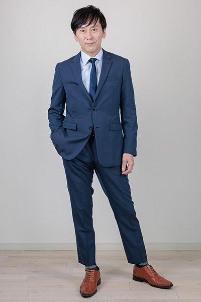

PROFILE
石崎賢一



石崎賢一Kenichi Ishizaki
| カテゴリ | MC/司会、ナレーター、役者、モデル |
|---|---|
| 言語 | バイリンガル英語 |
| 地域 | 関東 |
| 身長 | 176cm |
| 趣味 | 映画鑑賞 |
| 特技 | タップダンス、マラソン、野球 |
| 資格 | 書道6段
普通自動車免許 中型二輪免許 |
| 参考URL | |
| 音声サンプル | |
| SNS |
経歴
【バイリンガルMC】
- イングランドプレミアリーグチェルシーFCトークショー（日英）
- ミスインターナショナル日本代表選出大会2017～2019（日英）
- 香港ディズニーランド業界向け発表会（日英）
- マレーシア大使館主催Party（日英）
- Audi ディーラーアワード、Audi新車発表会（日英）
- 間脳開花塾司会（日韓）
- SAP FORUM（日英）
【MC】
- FIFA W杯日韓大会オフィシャルスポンサーブースMC
- FIVBビーチバレーワールドツアー東京ラウンドスタジアムDJ
- 大和アセットマネジメント「みんなで育む明日への森」インタビュアー
- トヨタ未来スクール「クルマまるわかり教室」講師役
- 東京2020Let’s 55 with三井不動産PRステージ
- 一ノ瀬竜バースデイイベント2019
- 大三国志2周年記念オフラインイベント
- TEKKEN世界大会コーナー実況
- Baccarat ETERNAL LIGHTS点灯式
- ニチバン100周年式典
- アフラック生命保険株式会社がん保険優積者表彰式
- Import Watch of The Year2013総合司会
- Wawmaベストショップアワード2017
- Seed 山種美術館 日本画アワード2016記者発表・表彰式
- BSJアニュアルアワード
- 医療財団法人表彰式
- 生研支援センターフォーラム
- ヒューマンアカデミー主催MBA取得講座
- 横浜磯子春祭り
- コカコーライベント
- CLINIQUE 新作発表会
- Bloody Wedding（ゲームソフト）ファンイベント
- フィールズ新機種発表会
- TOKYO BLUES（クラフトビール）記者発表会
- DMM馬ヌーシー記者発表影ナレ
- Lung Cancer National Symposium 影ナレ
- カプコン2タイトルカーニバル
- 各種プライベートショー
- 音楽イベント
- ダンスイベント
【トークショー】※敬称略
- 熊沢千絵、薬丸裕英、押切もえ、安座間美優、内田恭子、太田エイミー、金ヶ江悦子、三井ゆり、小嶋陽菜、おぎやはぎ、欅坂46、にしおかすみこ、ムーディー勝山（敬称略） 他多数
【MA】
- セブンイレブン商品ナレーション
- 「いいね！イスラエル」イスラエル人青年役
- NYマーケット日本語訳吹き替え
- 東京コミコン ブースcmナレーション
- カジタクTVcmナレーション
- ソフト99（方言編）ラジオcmナレーション
- 各製品VP、各社内研修動画ナレーション多数
【展示会】
- JASIS/島津製作所（2014年～専任）
- InterBEE/Panasonic
- IGAS/キヤノン
- PV EXPO/ソーラーフロンティア
- 情報セキュリティEXPO/住商情報システム、ソフォスなど
- エコプロダクツ/日立
- 国際医用画像総合展
- 東京モーターショー
- インターロップ
- ENEX
- CEATEC JAPAN
- クラウドエキスポ
- JASIS
- ドラッグストアショー
- IT WEEK春
- ウェルフェア
- 国際福祉機器展
- セキュリティーショー、
- AI Smart EXPO
- ワークスタイル変革EXPO
- IT PRO
- JPCA
- JIMTOF
- ナイス耐震博
- ジャパン建材フェア
- 地下土壌環境展
- JACLas
- 教育ITソリューションEXPO
- NEW環境展
- ジャンプフェスタ
- ツーリズムEXPO
- ロボット展
- 国際物流展
- ニコニコ超会議
- 東京コミコン
- Panasonic Wonder Japan
- Canon EXPO
- Brother World Japan
- 富士通FORUM
- LIXILリフォームフェア
【モデル】
- NTTデータ「次世代コールセンター」イメージ動画 サラリーマン役
- 東京ディズニーランドcm
- エイデンcm
- トヨタホームcm
- KDDI web cm
- NTT 東日本cm
- UNIQLO店内バナー
- スズキ自動車広告
- ユニクロ広告
- 三菱自動車カタログ
- 再現VTR多数
【その他】
- 東京オリンピック誘致 IOC視察 ガイド通訳
- Softbank決算説明会VIPアテンド兼通訳
- バイク王接客大会 お客役
- 東京ガールズコレクションVIP黒服アテンド
- ミスインターナショナル 黒服アテンド
- 舞台、ミュージックライブ、ダンスライブなど多数